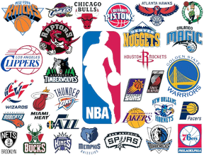

About the NBA
- The National Basketball Association (NBA) is a professional basketball league in North America, composed of 30 teams, divided into two conferences: the Eastern Conference and the Western Conference.
- The NBA is widely regarded as the premier men's professional basketball league in the world and is recognized for its high level of competition and international appeal.
- Founded in New York City on June 6, 1946, as the Basketball Association of America (BAA), the league changed its name to the National Basketball Association in 1949 after merging with the National Basketball League (NBL).
- The NBA season typically runs from October to April, followed by playoffs leading to the NBA Finals in June, where the champions are crowned.
Teams
- The NBA consists of 30 teams, evenly divided between the Eastern Conference and the Western Conference. Each team represents a different city or region across the United States and Canada.
- Some of the most iconic NBA teams include the Los Angeles Lakers, Boston Celtics, Chicago Bulls, Golden State Warriors, and Miami Heat.
- Each team has its own unique history, traditions, and fanbase, contributing to the rich tapestry of the NBA.
Players
- The NBA has been home to some of the greatest basketball players of all time, including Michael Jordan, LeBron James, Kobe Bryant, Shaquille O'Neal, and Magic Johnson.
- These players have achieved greatness on the court, setting records, winning championships, and captivating audiences with their skill and athleticism.
- Whether it's the scoring prowess of Kareem Abdul-Jabbar, the court vision of Larry Bird, or the dunking ability of Vince Carter, NBA history is filled with unforgettable moments courtesy of its legendary players.
- The amazing players that play in the NBA are what make the game exciting for everyone across the world on a nightly basis.
NBA Finals
- The NBA Finals is the championship series of the NBA, where the champions of the Eastern Conference and the Western Conference compete for the Larry O'Brien Championship Trophy.
- The NBA Finals is one of the most-watched sporting events in the world, attracting millions of viewers each year.
- Some of the most memorable NBA Finals moments include Michael Jordan's game-winning shot in 1998, Magic Johnson's "junior skyhook" in 1987, and Ray Allen's clutch three-pointer in 2013.
NBA All-Star Game
- The NBA All-Star Game is an annual exhibition basketball game held by the NBA, featuring the league's star players competing against each other in a showcase event.
- The All-Star Game typically takes place during the NBA's All-Star Weekend, which also includes other events such as the Slam Dunk Contest, Three-Point Contest, and Skills Challenge.
- Players are selected to participate in the All-Star Game through a combination of fan, player, and media voting, with the top vote-getters from each conference serving as team captains and selecting their teammates through a draft format.
- The All-Star Game provides fans with an opportunity to see some of the best players in the NBA share the court and display their skills in a fun and competitive setting.
NBA's Global Impact
- The NBA has a significant global presence, with a growing fan base and influence in countries around the world. The league's international appeal has been fueled by initiatives such as NBA Global Games, which feature regular-season games played outside of the United States and Canada.
- Additionally, the NBA has invested in grassroots basketball development programs in various countries, promoting the growth of the sport and nurturing young talent on a global scale.
- Many international players have made their mark in the NBA, including legends like Dirk Nowitzki, Hakeem Olajuwon, and Yao Ming, paving the way for future generations of players from diverse backgrounds.
- Through its global outreach efforts, the NBA continues to expand its reach and impact, bringing the excitement of basketball to fans worldwide and fostering a sense of unity and camaraderie through the game.